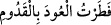

belirmedi, günler ve aylar birbirini kovalamadı.”
Bu âyet-i kerîmede insanın nefsine ve hevâsına; insanların nefislerinin kötü, çirkin,
habis ve değersiz amel çocuklarına; amel çocuklarını yere yıkılmış fânî olmuş birer
yaşlı ihtiyar hâline getirecek fânîlik kıyâmeti gününde Allah’tan uzak olacağına işâret
edilmektedir.
18. Gökyüzü bile onunla (o günün dehşetiyle) yarılacaktır. Allah’ın vaadi mutlaka
yerine gelir.
“Gökyüzü bile onunla (o günün dehşetiyle) yarılacaktır.” Çünkü Allah Teâlâ
sebepleri yaratandır. Dolayısıyla o günün şiddetini göğün yarılmasına sebeb kılabilir.
Allah bugünün korkunçluğunu ifâde etmek için iki şey zikretmiştir. Bunlardan birincisi:
“Çocukları ak saçlı ihtiyarlara çevirecek”, ifâdesi, ikincisi de: “Gökyüzü bile onunla
yarılır” ifâdesidir. Gökyüzü bunca azamete ve kuvvetine rağmen o günün dehşeti
sebebiyle yarılacaksa gökyüzünün dışındaki diğer yaratıkların ne hâl alacağını varın siz
hesap edin. Âyetteki “ba” harfi sebeb bildirmektedir. Bu âyetin zâhirinden anlaşılan
ihtimaldir.
Kamus’ta ifâde edildiğine göre “semâ” kelimesi bilinen gökyüzüdür ve müzekker
olabilir. Âyetteki “bâ” harfinin “fi” anlamına kullanılması mümkündür. Nitekim Mekkî,
Kûtu’l-kulûb isimli eserinde bu kanâate varmıştır. Çünkü o şöyle der: Amil olan
harflerin bir kısmı diğerinin yerine geçebilir. Örnek olarak; “es-semâu munfatırun bih”
ifâdesini zikredebiliriz. Bu; “es-semâu munfatırun fîh” demektir, yâni gök o gün yarılır
anlamınadır.
Bâzı âlimlere göre “munfatırun bih” ifâdesindeki “bâ” harfi âlet ve istiâne
anlamınadır. Tıpkı “
” yâni odunu keserle yardım, cümlesindeki “ba”
harfinin âlet ve istiâne anlamına gelmesi gibi. Üzerinde durduğumuz âyete gelecek
olursak; gökyüzü o günün dehşetinden ve şiddetinden yarılır demektir. Tıpkı herhangi
bir şeyin kendisini yaran âlet vâsıtasıyla yarıldığı gibi.
Bâzı âlimlere göre; “ba” harfini âlet ve istiâne olarak almak Allah açısından uygun bir
açıklama değildir ve semânın zâtına da münâsip düşmez.
“Allah’ın vaadi mutlaka yerine gelir.” Kesinlikle gerçekleşir. Âyetteki “hû”
zamirinin mercii “Allah” kelimesidir. Zamir daha önce geçmiş olan ismin yerini tutar.
Bu âyette her ne kadar Allah’ın ismi geçmiş olmasa da kendisi malum olduğu için merci
Allah Teâlâ’dır. Âyetteki masdar “vaad” fâiline muzaftır. Yâni Allah Teâlâ’nın vaadi
mutlaka gerçekleşir demek olur. Bir başka ifâdeyle Allah Teâlâ’nın vaadi kıyâmet günü
vasfedilen o şiddet ve sıkıntılara uygun olarak mutlaka meydana gelecektir demek olur.
Çünkü O vaadinden asla dönmez. Akıllı olan bir kimsenin bu noktada şüpheye